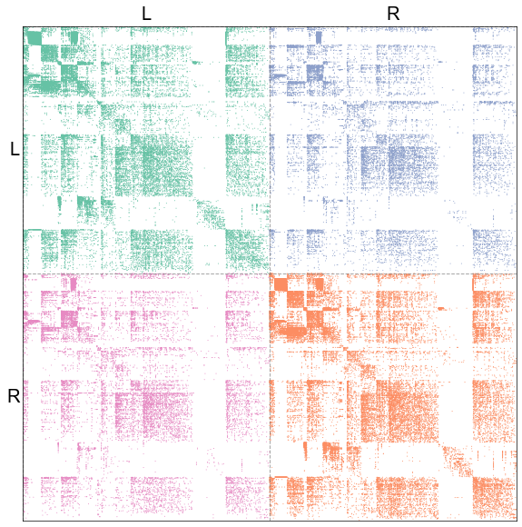
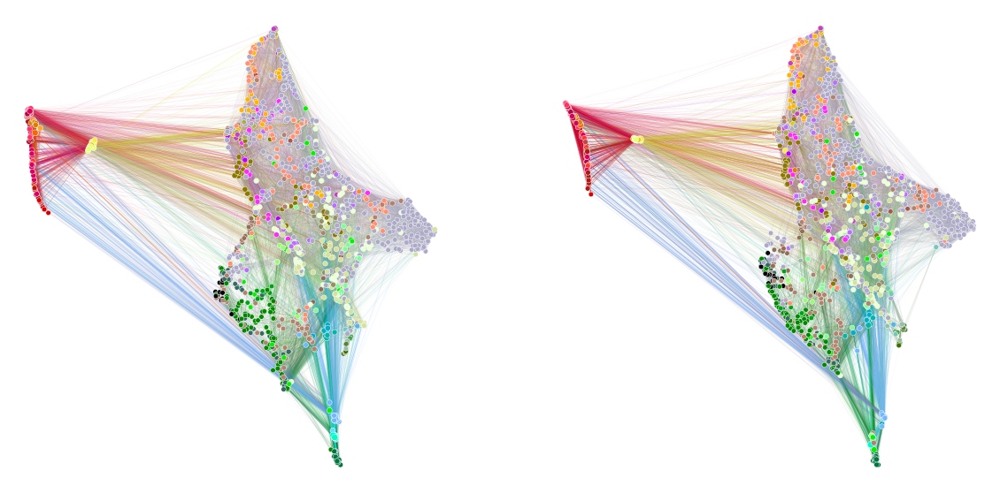

Look at it (left vs. right induced subgraphs)¶
Preliminaries¶
from pkg.utils import set_warnings
import datetime
import time
import matplotlib.pyplot as plt
import numpy as np
import seaborn as sns
from graspologic.embed import selectSVD
from sklearn.preprocessing import normalize
from graspologic.utils import pass_to_ranks
from umap import AlignedUMAP
from giskard.plot import graphplot
from src.visualization import CLASS_COLOR_DICT
from graspologic.align import OrthogonalProcrustes, SeedlessProcrustes
from graspologic.embed import (
AdjacencySpectralEmbed,
OmnibusEmbed,
select_dimension,
)
from graspologic.match import GraphMatch
from graspologic.plot import pairplot
from graspologic.utils import (
augment_diagonal,
binarize,
multigraph_lcc_intersection,
pass_to_ranks,
)
from pkg.data import (
load_maggot_graph,
load_palette,
select_nice_nodes,
load_node_palette,
load_network_palette,
)
from pkg.io import savefig
from pkg.plot import set_theme
from giskard.utils import get_paired_inds
from src.visualization import adjplot # TODO fix graspologic version and replace here
def stashfig(name, **kwargs):
foldername = "look_at_it"
savefig(name, foldername=foldername, **kwargs)
Load and process data¶
t0 = time.time()
set_theme()
network_palette, NETWORK_KEY = load_network_palette()
node_palette, NODE_KEY = load_node_palette()
mg = load_maggot_graph()
mg = select_nice_nodes(mg)
nodes = mg.nodes
left_nodes = nodes[nodes["hemisphere"] == "L"]
left_inds = left_nodes["_inds"]
right_nodes = nodes[nodes["hemisphere"] == "R"]
right_inds = right_nodes["_inds"]
left_paired_inds, right_paired_inds = get_paired_inds(
nodes, pair_key="predicted_pair", pair_id_key="predicted_pair_id"
)
right_paired_inds_shifted = right_paired_inds - len(left_inds)
adj = mg.sum.adj
ll_adj = adj[np.ix_(left_inds, left_inds)]
rr_adj = adj[np.ix_(right_inds, right_inds)]
Removed 13 nodes when taking the largest connected component.
Removed 38 nodes when removing pendants.
Removed 0 nodes when taking the largest connected component.
Plot the ipsilateral subgraph adjacency matrices¶
def calculate_weighted_degrees(adj):
return np.sum(adj, axis=0) + np.sum(adj, axis=1)
def plot_adjs(left, right, title=""):
fig, axs = plt.subplots(1, 2, figsize=(15, 7))
adjplot(
left,
item_order=-calculate_weighted_degrees(left),
plot_type="scattermap",
sizes=(2, 2),
ax=axs[0],
title=r"Left $\to$ left",
color=network_palette["Left"],
)
adjplot(
right,
item_order=-calculate_weighted_degrees(right),
plot_type="scattermap",
sizes=(2, 2),
ax=axs[1],
title=r"Right $\to$ right",
color=network_palette["Right"],
)
fig.suptitle(title, ha="center", x=0.51)
return fig, axs
plot_adjs(ll_adj, rr_adj, title="Ipsilateral adjacencies, ordered by degree")
stashfig("ipsilateral-adj-degree")

def ase(adj, n_components=None):
U, S, Vt = selectSVD(adj, n_components=n_components, algorithm="full")
S_sqrt = np.diag(np.sqrt(S))
X = U @ S_sqrt
Y = Vt.T @ S_sqrt
return X, Y
def prescale_for_embed(adjs):
norms = [np.linalg.norm(adj, ord="fro") for adj in adjs]
mean_norm = np.mean(norms)
adjs = [adjs[i] * mean_norm / norms[i] for i in range(len(adjs))]
return adjs
Plot a graph layout for each hemisphere¶
n_components = 16 # 24 looked fine
power = True
normed = False
if power:
ll_adj_for_umap = pass_to_ranks(ll_adj)
rr_adj_for_umap = pass_to_ranks(rr_adj)
if normed:
ll_adj_for_umap = normalize(ll_adj_for_umap, axis=1)
rr_adj_for_umap = normalize(rr_adj_for_umap, axis=1)
ll_adj_for_umap = ll_adj_for_umap @ ll_adj_for_umap
rr_adj_for_umap = rr_adj_for_umap @ rr_adj_for_umap
else:
ll_adj_for_umap = pass_to_ranks(ll_adj)
rr_adj_for_umap = pass_to_ranks(rr_adj)
X_ll, Y_ll = ase(ll_adj_for_umap, n_components=n_components)
X_rr, Y_rr = ase(rr_adj_for_umap, n_components=n_components)
Z_ll = np.concatenate((X_ll, Y_ll), axis=1)
Z_rr = np.concatenate((X_rr, Y_rr), axis=1)
# Z_ll, _ = ase(Z_ll, n_components=n_components)
# Z_rr, _ = ase(Z_rr, n_components=n_components)
relation_dict = dict(zip(left_paired_inds, right_paired_inds_shifted))
aumap = AlignedUMAP(
random_state=88888,
n_neighbors=32,
min_dist=0.95,
metric="cosine",
alignment_regularisation=1e-2,
)
umap_embeds = aumap.fit_transform([Z_ll, Z_rr], relations=[relation_dict])
graphplot_kws = dict(sizes=(30, 60))
fig, axs = plt.subplots(1, 2, figsize=(20, 10))
graphplot(
network=ll_adj,
embedding=umap_embeds[0],
meta=left_nodes,
hue="merge_class",
palette=CLASS_COLOR_DICT,
ax=axs[0],
**graphplot_kws,
)
graphplot(
network=rr_adj,
embedding=umap_embeds[1],
meta=right_nodes,
hue="merge_class",
palette=CLASS_COLOR_DICT,
ax=axs[1],
**graphplot_kws,
)
stashfig("aligned-umap-layout")

Simple statistics for the left hemisphere induced subgraph¶
ll_mg, rr_mg, _, _ = mg.bisect(paired=False)
ll_mg.sum
| n_nodes | n_edges | sum_edge_weights | |
|---|---|---|---|
| edge_type | |||
| sum | 1481.0 | 36447.0 | 117068.0 |
Simple statistics for the right hemisphere induced subgraph¶
rr_mg.sum
| n_nodes | n_edges | sum_edge_weights | |
|---|---|---|---|
| edge_type | |||
| sum | 1481.0 | 39096.0 | 129527.0 |
elapsed = time.time() - t0
delta = datetime.timedelta(seconds=elapsed)
print("----")
print(f"Script took {delta}")
print(f"Completed at {datetime.datetime.now()}")
print("----")
----
Script took 0:01:21.321180
Completed at 2021-05-10 18:23:09.329480
----